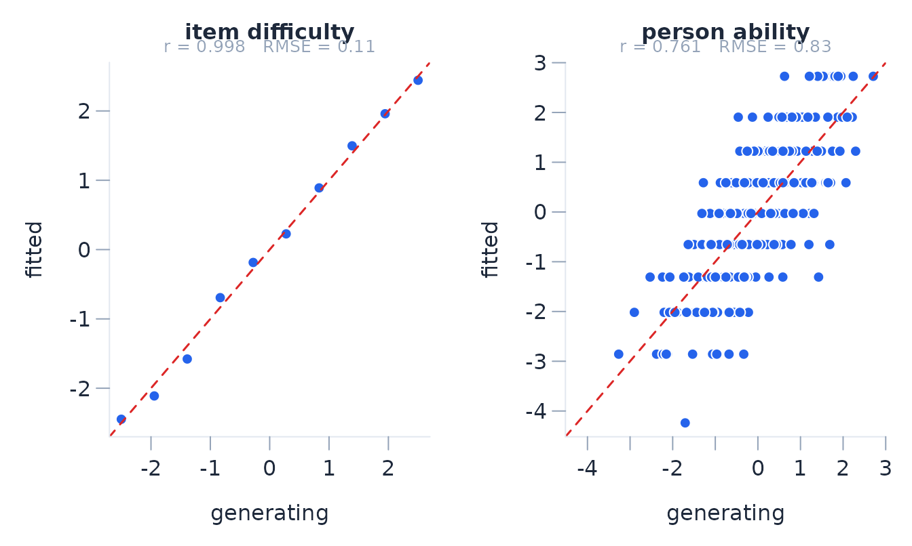

Simulation-based checks of Rasch diagnostics
Josh McGrane
Source:vignettes/plant-and-detect.Rmd
plant-and-detect.RmdSimulating from the models
Simulation is useful when the sampling behaviour of an estimate or diagnostic depends on the test design. The package includes simulators for the ordinary Rasch models (Rasch 1960; Andrich and Marais 2019), many-facet models, extended frames of reference (Humphry 2005; Humphry and Andrich 2008), and comparative judgement of paired comparisons. They can generate model-conforming data or introduce a specified departure.
Each simulator stores the generating values in
attr(x, "truth").
d <- simulate_rasch(n_persons = 400, n_items = 10, seed = 101)
names(attr(d, "truth"))
#> [1] "layout" "description" "model" "n_persons"
#> [5] "n_items" "theta" "theta2" "difficulty"
#> [9] "thresholds" "discrimination" "guessing" "groups"
#> [13] "dim_items" "dif_items" "careless_idx" "style_idx"
#> [17] "planted"Parameter recovery
sim_recovery compares fitted parameters with the
generating values. Location parameters are centred before comparison
because their origin is arbitrary.
fit <- rasch(d, id = "id")
rec <- sim_recovery(fit, d)
rec
#> Parameter recovery (planted vs recovered):
#> item difficulty n=10 r=0.998 RMSE=0.108 bias=NA
#> person ability n=400 r=0.761 RMSE=0.826 bias=NA
plot_recovery(rec)
Item locations pool information over persons. Each person location is based on the items answered by that person, so person recovery is usually less precise on a short test. This difference should be judged against the reported standard errors rather than the raw recovery correlations alone.
Item misfit
The discrimination argument changes an item’s response
slope. Values above one produce more deterministic responses than the
Rasch model expects; values below one produce less deterministic
responses.
disc <- rep(1, 10)
disc[5] <- 2.5
disc[6] <- 0.4
d2 <- simulate_rasch(400, 10, discrimination = disc, seed = 21)
fit2 <- rasch(d2, id = "id")
fit2$items[, c("item", "location", "infit_ms", "outfit_ms")]
#> item location infit_ms outfit_ms
#> 1 I01 -2.5220 0.8994 0.7716
#> 2 I02 -1.8851 1.0412 0.9415
#> 3 I03 -1.5071 1.0119 0.8956
#> 4 I04 -0.7011 1.0517 0.9912
#> 5 I05 -0.3867 0.9134 0.8490
#> 6 I06 0.2056 1.2625 1.2397
#> 7 I07 0.7730 1.0445 1.0459
#> 8 I08 1.4631 1.0828 0.9437
#> 9 I09 2.1031 1.0133 0.8363
#> 10 I10 2.4572 1.0382 0.7645Over-discrimination tends to give mean-square statistics below one; under-discrimination tends to give values above one. Their sampling variation still depends on the item location, sample, and test length.
Differential item functioning
The dif argument shifts selected items for a person
group. Here I06 differs by one logit in the second group.
d3 <- simulate_rasch(
500, 10,
dif = list(items = "I06", uniform = 1),
n_groups = 2,
seed = 303
)
fit3 <- rasch(d3, id = "id", factors = "group")
da <- dif_anova(fit3)
da$summary[, c("item", "term", "F_uniform", "p_uniform_adj", "uniform_DIF")]
#> item term F_uniform p_uniform_adj uniform_DIF
#> 1 I01 group 0.164009 0.855993 FALSE
#> 2 I02 group 3.234919 0.242365 FALSE
#> 3 I03 group 0.172138 0.855993 FALSE
#> 4 I04 group 0.412059 0.855993 FALSE
#> 5 I05 group 3.694811 0.242365 FALSE
#> 6 I06 group 18.647136 0.000191 TRUE
#> 7 I07 group 0.611468 0.855993 FALSE
#> 8 I08 group 0.008686 0.925785 FALSE
#> 9 I09 group 0.138649 0.855993 FALSE
#> 10 I10 group 0.085278 0.855993 FALSEdif_anova tests invariance. dif_size
resolves the item by group and reports the difference between the
resolved locations in logits.
dif_size(fit3, "I06", by = "group")
#> DIF size for I06 by group (resolved locations, logits)
#> level location se weak n
#> g1 0.262 0.140 0 250
#> g2 1.266 0.162 0 250
#> level_a level_b difference se z p p_adj lower upper significant
#> g1 g2 -1.004 0.234 -4.287 0 0 -1.463 -0.545 *
#> practical
#> >= 0.50
#> p adjusted by holm over 1 pairwise comparison(s); practical criterion 0.50 logitsA simulation study of DIF should record false-positive rates for invariant items as well as detection of the shifted item. Sample size, group imbalance, targeting, test length, and shift size should be varied separately.
Local response dependence
The dependence argument makes one item’s response partly
follow another. residual_correlations reports Yen’s Q3 and
adjusted Q3. Because adjusted Q3 has no universal critical value,
flag is a screening threshold supplied by the analyst (Yen
1984; Christensen, Makransky and Horton 2017).
d4 <- simulate_rasch(
500, 10,
dependence = list(
pairs = list(c("I04", "I05")),
strength = 1.8
),
seed = 41
)
fit4 <- rasch(d4, id = "id")
rc <- residual_correlations(fit4, flag = 0.20)
head(rc$pairs, 3)
#> item_a item_b q3 q3_star flagged
#> 1 I04 I05 0.170343 0.2688 TRUE
#> 2 I02 I10 0.042300 0.1407 FALSE
#> 3 I02 I09 0.002477 0.1009 FALSEdependence_magnitude resolves the dependent item by the
response to the independent item and expresses the displacement on the
logit scale (Andrich and Kreiner 2010).
dependence_magnitude(fit4, dependent = "I05", independent = "I04")
#> Response dependence of I05 on I04 (Andrich & Kreiner resolution)
#> d = 0.760 logits (se 0.139), z = 5.48, p = < 0.001Paired comparisons
The paired-comparison simulator can introduce erratic judges, ties, position effects, or within-judge dependence. In this example, one quarter of the judges respond at random.
b <- simulate_btl(
n_objects = 7,
n_judges = 8,
reps_per_pair = 30,
erratic_judges = 0.25,
seed = 61
)
bt <- btl(b, "object_a", "object_b", winner = "winner", judge = "judge")
bt$judges[order(-bt$judges$fit_resid), ]
#> judge n infit_ms outfit_ms fit_resid df_fit
#> 1 J1 74 1.4569 1.5253 3.9953 73.30
#> 2 J2 75 1.3566 1.4168 3.2204 74.29
#> 6 J6 70 1.0708 1.0758 0.5876 69.33
#> 4 J4 78 0.9017 0.8810 -1.1930 77.26
#> 7 J7 77 0.8939 0.8757 -1.3396 76.27
#> 3 J3 81 0.8743 0.8520 -1.5176 80.23
#> 8 J8 92 0.8565 0.8232 -1.8897 91.12
#> 5 J5 83 0.7515 0.7151 -2.9513 82.21Judge fit describes agreement with the common object scale. Transitivity is a different summary: it counts circular triads in the observed comparisons.
tr <- btl_transitivity(bt)
tr$summary
#> n_objects n_pairs n_triples n_circular circular_rate chance_rate consistency
#> 1 7 21 30 2 0.06667 0.25 0.7333
#> zeta
#> 1 NA
head(tr$judges)
#> judge n_comparisons n_triples n_circular circular_rate consistency
#> 1 J2 75 21 7 0.33333 -0.3333
#> 2 J1 74 25 3 0.12000 0.5200
#> 3 J6 70 35 4 0.11429 0.5429
#> 4 J3 81 15 1 0.06667 0.7333
#> 5 J8 92 30 1 0.03333 0.8667
#> 6 J4 78 21 0 0.00000 1.0000Repeated simulation
sim_replicate generates datasets with successive seeds.
The same analysis can then be applied to each dataset to estimate bias,
coverage, rejection rates, or power.
batch <- sim_replicate(
simulate_rasch, 10,
n_persons = 400,
n_items = 8,
dif = list(items = "I04", uniform = 0.8),
n_groups = 2,
seed = 700
)
flagged <- vapply(batch, function(dd) {
s <- dif_anova(rasch(dd, id = "id", factors = "group"))$summary
isTRUE(s$uniform_DIF[s$item == "I04"])
}, logical(1))
mean(flagged)
#> [1] 0.5Ten replicates demonstrate the workflow but do not give a stable power estimate. For a Monte Carlo proportion \(\hat p\) based on \(R\) independent replicates, the estimated Monte Carlo standard error is
\[ \operatorname{MCSE}(\hat p)= \sqrt{\frac{\hat p(1-\hat p)}{R}}. \]
The number of attempted, refused, and non-converged fits should be reported. Bias and coverage should be calculated for each generating condition rather than after pooling conditions with different true values.
Validation studies
The repository contains the simulation studies used to check
parameter recovery, standard errors, confidence-interval coverage, null
rejection rates, power, and identification guards. The scripts and
result tables are under tools/simval/; they are excluded
from the CRAN source package for size, and are computationally intensive
to re-run. The examples in this vignette use small runs and are intended
as templates for design-specific studies.
The principal calibration results, each carried with its script and provenance in the result tables:
| Quantity | Design | Result |
|---|---|---|
lr_test adjusted size |
500 persons, 8 items, 3 categories | 4.7% at the 0.05 level (2,000 replicates) |
lr_test small-sample edge |
300 persons, 12 items, 4 categories | 6.1% among 1,927/2,000 admissible replicates |
dependence_magnitude size |
800 persons, 10 items | 7.5% pooled-variance (pre-fix) to 4.8% covariance-based |
| EFRM set-unit omnibus size | 200/group, 8 items/set, 2 sets | 9.4% (pre-fix) to 4.9% (1,200 replicates, eight designs) |
| Comparative judgement contrasts | 10-50 judges, balanced | 5.0% size, 94.5% coverage (1,200 replicates) |
| Effective-judge thresholds | one judge with 15-50% of comparisons | ~9% at 4 effective, ~7% at 6-7, nominal when balanced |
| Equating familywise error | 3, 5, and 10 anchors | 4.9-5.5% (2,000-4,000 replicates) |
| Person-measure coverage | 10-item test, central range | 0.945-0.983; conservative in the tails |
| Tailored bootstrap familywise error | 300 persons, 8 items | 0.8% over 240 full-procedure replicates |
| CL-AIC model selection | PCM vs RSM; free vs PC thresholds (items and CJ) | null false selection 4.5-5.2% multi-parameter, ~17% one-parameter (the theoretical AIC rates); detection 95-100% at strong departures |
| Paired-comparison effect tests | 8 objects, 14 judges | position/exposure nulls 5.8%/5.9%; carry-over 8.3% at 14 judges, 5.3% at 30; power 62/39/77% at 0.6 logits |
| Cross-package agreement | sirt, eRm, TAM, BradleyTerry2, VGAM | identical-likelihood comparators at solver precision; estimator variants within 0.02-0.15 logits; EFRM unit ratio’s documented small upward bias quantified against an unbiased TAM anchor |
References
Andrich, D. (1978). Relationships between the Thurstone and Rasch approaches to item scaling. Applied Psychological Measurement, 2(3), 451–462.
Andrich, D., and Kreiner, S. (2010). Quantifying response dependence between two dichotomous items using the Rasch model. Applied Psychological Measurement, 34, 181–192.
Andrich, D., and Marais, I. (2019). A Course in Rasch Measurement Theory. Springer.
Christensen, K. B., Makransky, G., and Horton, M. (2017). Critical values for Yen’s Q3. Applied Psychological Measurement, 41, 178–194.
Morris, T. P., White, I. R., and Crowther, M. J. (2019). Using simulation studies to evaluate statistical methods. Statistics in Medicine, 38, 2074–2102.
Humphry, S. M. (2005). Maintaining a Common Arbitrary Unit in Social Measurement. PhD thesis, Murdoch University.
Humphry, S. M., and Andrich, D. (2008). Understanding the unit in the Rasch model. Journal of Applied Measurement, 9(3), 249–264.
Rasch, G. (1960). Probabilistic Models for Some Intelligence and Attainment Tests. Danish Institute for Educational Research. Expanded edition, University of Chicago Press, 1980.
Tutz, G. (1986). Bradley-Terry-Luce models with an ordered response. Journal of Mathematical Psychology, 30(3), 306–316.
Warm, T. A. (1989). Weighted likelihood estimation of ability in item response theory. Psychometrika, 54, 427–450.
Yen, W. M. (1984). Effects of local item dependence on the fit and equating performance of the three-parameter logistic model. Applied Psychological Measurement, 8, 125–145.